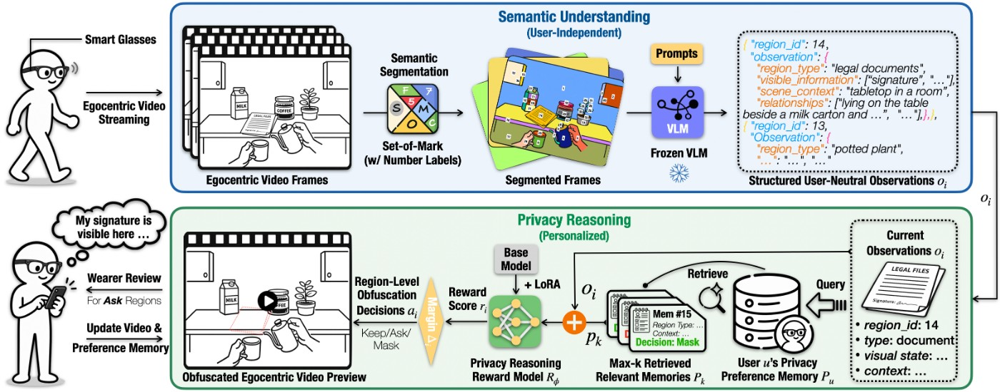

不把某类物体一律判为敏感
EgoVeil研究智能眼镜视频里哪些区域应该被遮挡。它先将画面分区并生成结构化描述，再结合佩戴者已经确认的隐私偏好，给出保留、询问或遮挡的决定。这里的输入不只是“这是一块屏幕”，还包括屏幕当前显示什么及周围情境。对产品设计而言，这比把所有屏幕一律打码更有针对性，却也引入判断责任：系统必须知道自己是在应用谁的偏好。佩戴者愿意保存某个场景，不代表画面里的其他人已经同意被识别或记录。
EgoVeil · 论文／交互研究原型

EgoVeil研究智能眼镜视频里哪些区域应该被遮挡。它先将画面分区并生成结构化描述，再结合佩戴者已经确认的隐私偏好，给出保留、询问或遮挡的决定。这里的输入不只是“这是一块屏幕”，还包括屏幕当前显示什么及周围情境。对产品设计而言，这比把所有屏幕一律打码更有针对性，却也引入判断责任：系统必须知道自己是在应用谁的偏好。佩戴者愿意保存某个场景，不代表画面里的其他人已经同意被识别或记录。
系统的Ask机制把部分不确定判断交回佩戴者，确认结果会更新偏好记忆，而不必每次重新训练个人模型。这样的入口能够减少逐帧检查，但是否打扰过多，需要在实际使用中验证。我们会要求用户能看到某次遮挡依据了什么旧决定，并能撤销已经过时的偏好。例如曾经允许保存工作桌面，不该自动延伸为允许保存后来出现的客户资料。记忆越长也不必然越可靠；错误或过度概括的例子如果反复被检索，可能持续影响后续决定。
论文以十名智能眼镜用户的实际采集数据，按跨用户、时间顺序协议评估，报告平衡准确率91.93%、Mask召回率84.42%。两项指标不能互换：后一数值说明需要遮挡的区域仍可能被漏掉，不能把较高准确率写成隐私保证。这也是研究数据上的作者结果，并非本刊独立复现或眼镜端长期运行证据。我们更关心遗漏出现在哪里、泄露后是否还能补救，以及错误遮挡是否让“东西放在哪里”等辅助任务失去必要线索，而不只比较一个汇总分数。
若用于个人记忆助手，我们建议先明确原始视频、结构化描述、偏好记录分别在哪里保存、何时删除，以及遮挡发生在上传之前还是之后。这些边界不应只藏在一个“隐私模式”开关后面。不同信息可能具有不同敏感性，删除成片也未必等于删除推导出的文字记忆。本文提出的是采用核对项，没有核实消费服务的套餐、地区或端到端存储实践。该论文提交时间比本期72小时下界早约半小时，因此按一周回看呈现，不包装成今天上市的新眼镜。